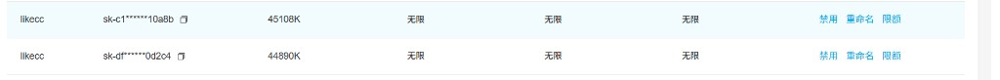
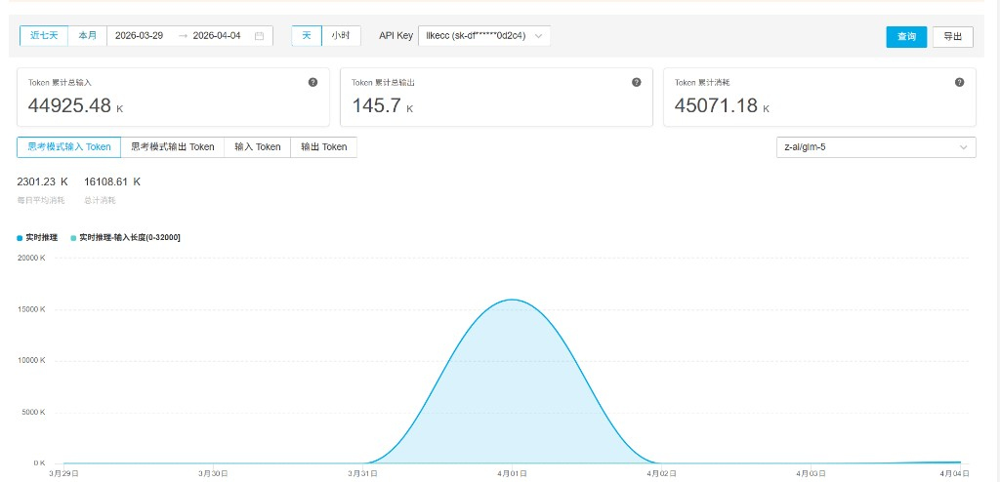

项目开发日志 编译、学习与可视化
本文记录本仓库如何从零散资料走向可编译、可浏览的静态站点，以及我们采用的长期迭代节奏。
注意：下文不包含任何完整 API 密钥、内部排期或供应商合同信息；用量截图中的密钥在控制台侧已为掩码展示。
我们在做什么
工程目标是围绕 Claude Code 相关公开材料，整理源码向的课程章节、手册与流程图，让读者能按图索骥理解 Agent Loop、工具系统、MCP 等模块。迭代过程中，最大工作量在 TypeScript 工程的依赖对齐、类型修补与可重复构建，其次才是站点与 Mermaid 可视化。
编译与「能跑起来」
- 基线：以可公开获得的映射与目录为起点，在本地恢复与官方行为接近的 CLI 形态，并保证
pnpm/npm构建链路在干净环境下可通过。 - 策略：按模块分批消除编译错误——先核心循环与工具注册，再桥接、任务与扩展；每轮修复后记录到版本化计划文档，避免「改一处塌一片」。
- 产出：当主包能稳定产出可执行入口后，才把讲义拆成 S01–S12，用章节页固定「问题—方案—源码片段」结构，减少读者跳跃成本。
学习与可视化
- 站点：采用静态 HTML + 共享
style.css/app.js，便于托管在 GitHub Pages。 - Mermaid：首页提供课程总览图；各章增加「本章导图」；本页展示方法论总图（见下节）。深色画布与 Catppuccin 系配色在弱光下对比度更稳。
- 导航：增加可收缩侧栏，深页也能一键跳到任意章节或返回首页。
Loop-in-Loop：计划驱动的递归节奏
在长时间会话里，我们采用自洽的「外层计划循环 + 内层执行循环」——名字上像递归，本质是同一套规程套用在不同版本的计划文件上：每一版计划承接上一版的结论与未完成项，并在文末显式触发下一轮全量执行，直到新计划闭合。
工程准备（一次做好，可反复用）：维护 .claude 下的技能与命令约定；在 reference 放置可对标的仓库、笔记或论文；在仓库顶层用 vX.Y.Z_plan.md 一类文件承载大颗粒里程碑，避免对话里口头目标漂移。
外层 Loop（计划粒度）：在固定时间盒内对照当前版本计划检查完成度；若未完成则继续改代码、编译与记录；若完成则做结果复盘，并撰写下一版计划——新版开头用简短「承上启下」回顾上一版目标、实验与遗留问题，再列新条目。
内层 Loop（递归触发）：在新计划文末约定再次执行同一套「对照清单 → 实现 → 编译验证 → 复盘」的规程，相当于把外层 Loop 应用到新文件上；如此多轮后，仓库状态与文档始终同频。
工具链说明：会话主体使用 Claude Code；部分阶段接入了与 OpenAI 兼容协议的 GLM 系列端点（由云厂商控制台托管）。下文用量为控制台统计口径的汇总，不代表单一模型或单一任务的精确拆分。
用量快照（2026-03-31 — 04-02）
以下为控制台导出的示意截图，用于说明曾有一段约 48 小时的高强度连续迭代窗口；两枚独立密钥的统计相加约为 4×10⁸ 量级的 token 消耗（具体数字以账单系统为准，此处不精确到个位）。截图中密钥均已被界面掩码，请勿在公开场合补全或转发完整密钥。


小结
本页是一份过程说明，不是教程正文；技术细节仍以各章课程与官方文档为准。若你复现类似流程，请务必轮换与吊销密钥、在控制台开启限额与告警，并遵守各云厂商条款。